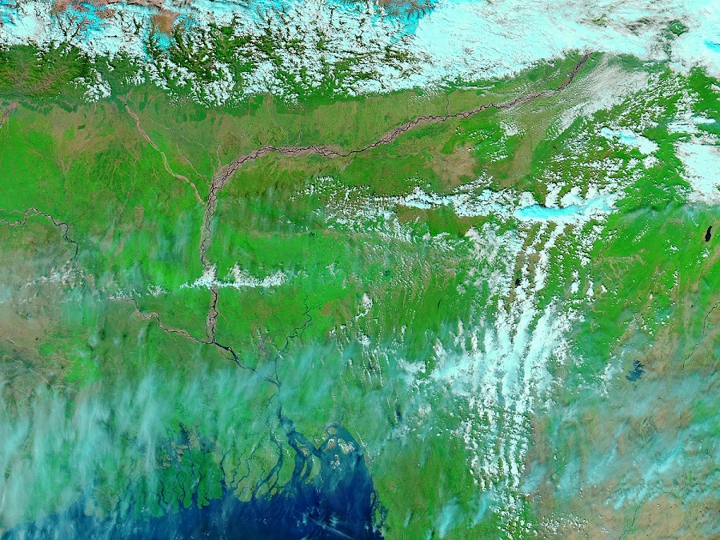
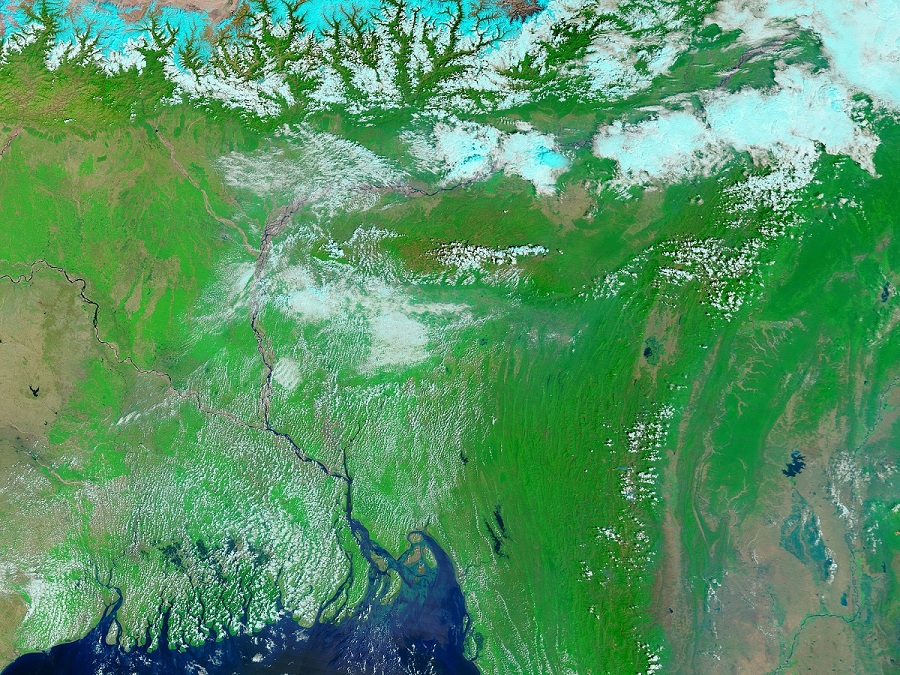
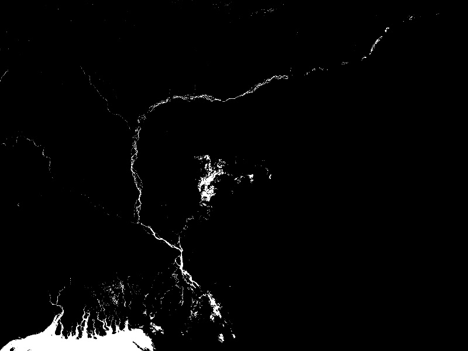
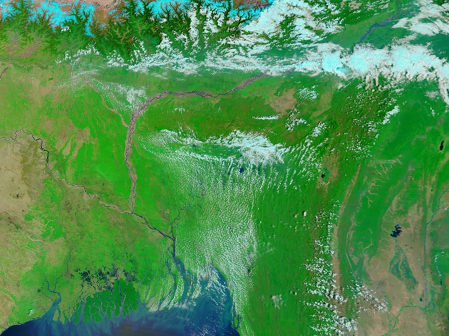
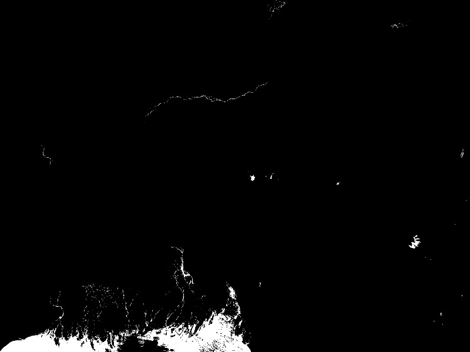

There are many cases where we don't get well refined data for our research and other works. The major problem is with data which consists of images. This project deals with completion of a river trajectory from various images of the same river captured at different instant of time. As the cloud cover distorts the path of the river in a single image, it becomes difficult for a researcher to work on it. So to overcome that difficulty, the images need pre-processing. For this project, we have taken 7 satellite images of Brahmputra River at different span of time.
The two images are shown below.
 Satellite image 1  satellite image 2Processing the images
For image processing, the best python library I prefer is OpenCv. It contains abundant methods and frameworks to work on images. After
installing OpenCv library, we begin our image processing in three steps:
- Masking the images.
- Using algorithm to filter the masked images.
- Combining the filtered images into a single image.
Masking the images
We have to deal with river trajectory. Rest of the details in the image is usless for us in current scenario. So how to get only the river path?
The answer to this question is masking. We know that in the satellite image, river is blue in color. Rest detils are in different color. Though some of
the patches might be blue in color apart from the river. But in this step, we need not to worry about it. So to mask the image, we use a limit in blue color.
We use hue-saturation values of blue color. Once the limit is set, we use inbuilt OpenCv method to mask the images.
Given below are two satellite images and their masked images.
 masked image 1
 Unmasked image 2
masked image 2
Using algorithm to filter the masked images
As we see in the masked images, there are extra white dots present apart from river path. We need to remove them so that the image would give
only the river path. To do so, we used a sliding window concept. A window is basically a grid of pixels. We can manage the size of grid
in our code. Now we slide the grid horizontally throught the image. To remove the extra patches, we check the proportion of the intensity of white
pixels. We also check whether the white pixels form a pattern or randomly scatteres. After removing the scattered white pixels, we filter the image.
Removing white pixels generally means making them black.
Note: We perform this algorithm in masked images.
The masked and filtered image is shown below.
 Filtered image
Combining the filtered images into a single image
We see that one single filtered image is not enought to give the complete river path. So we merge all 7 filtered images into a single
image to complete the river path.
The combined image is shown below.
Finally we have got the complete river trajectory for further data processing. This technique is efficiently used in various image processing data and machine learning.
The complete code and reference to this project is given in my
github repository .
Thank You for reading.